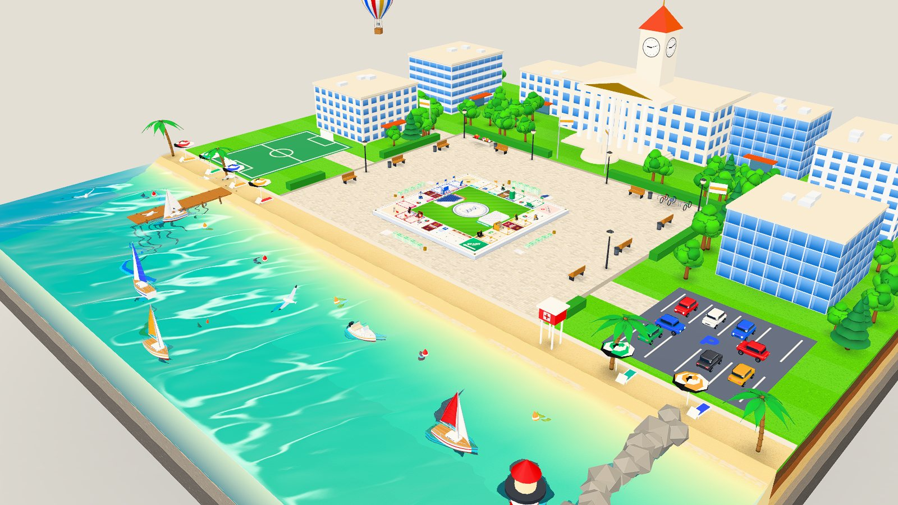
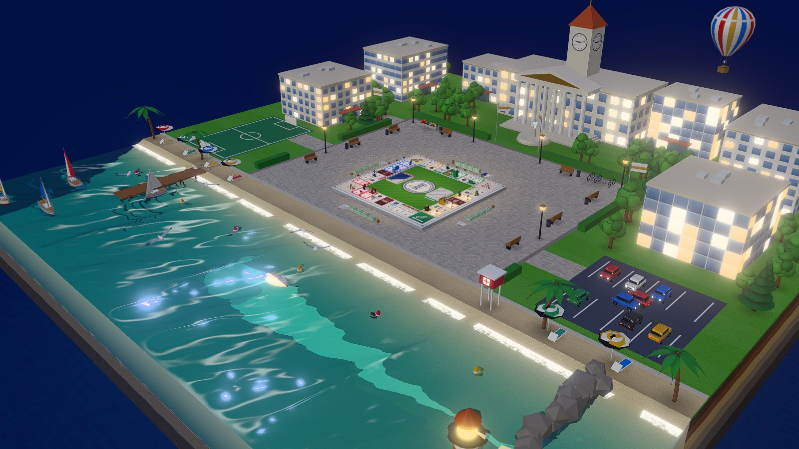
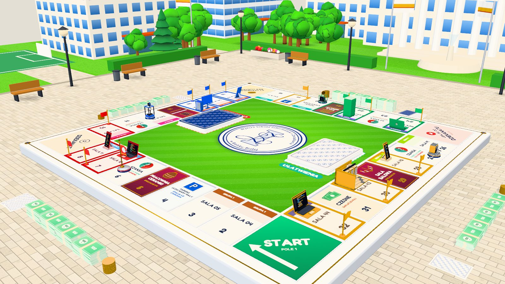
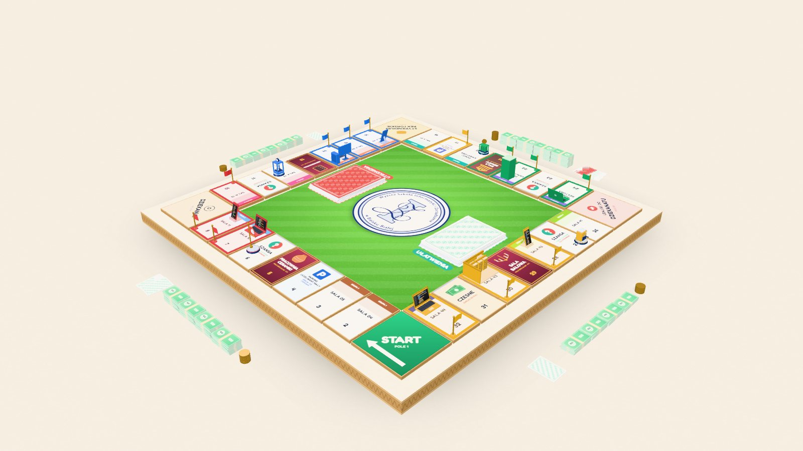
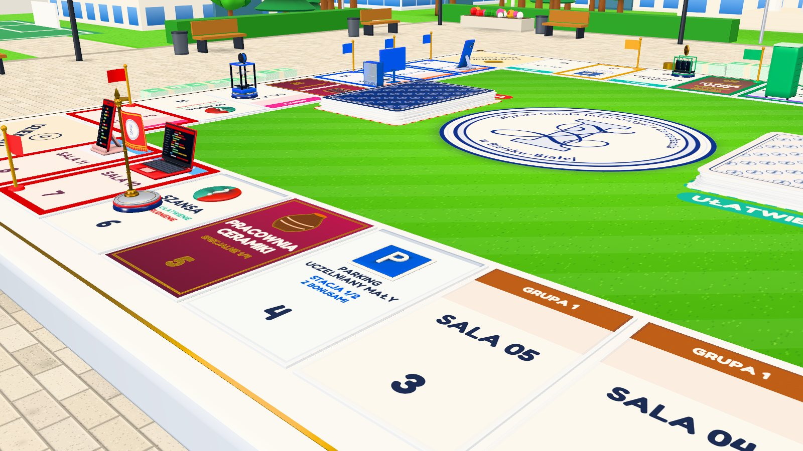
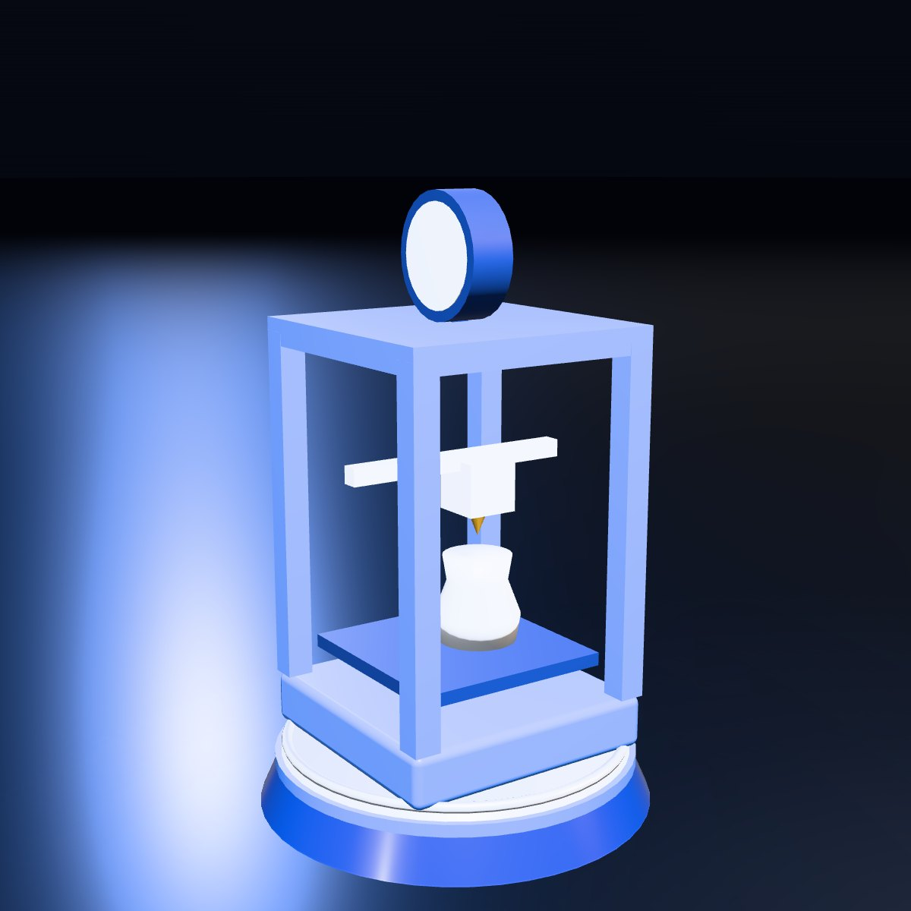
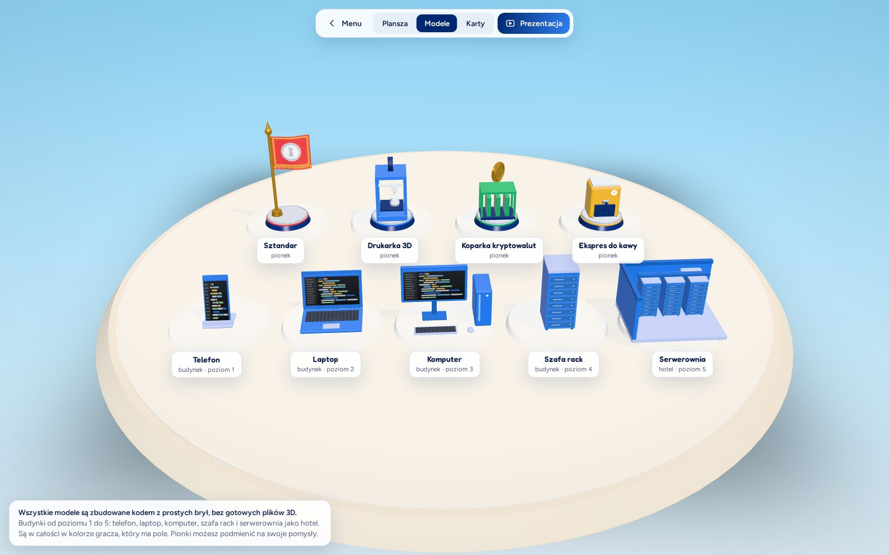
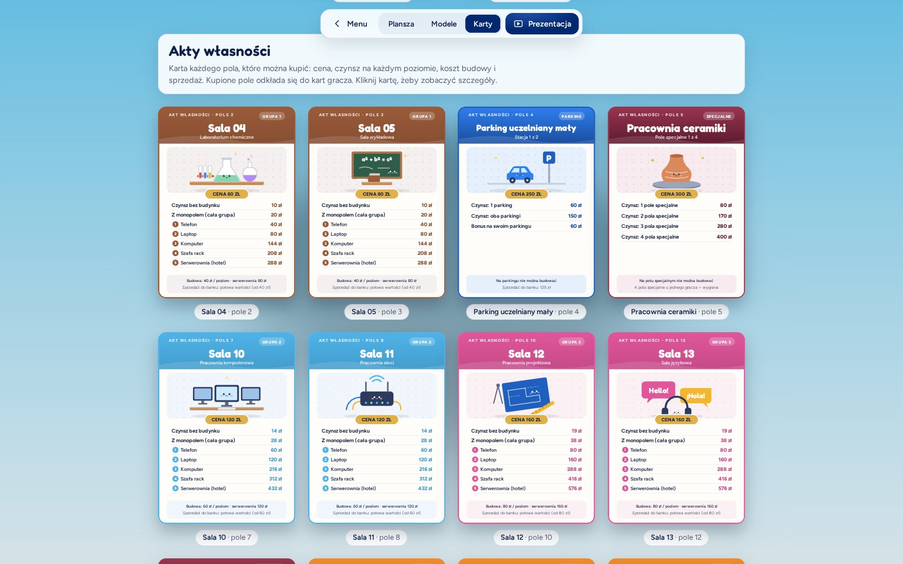
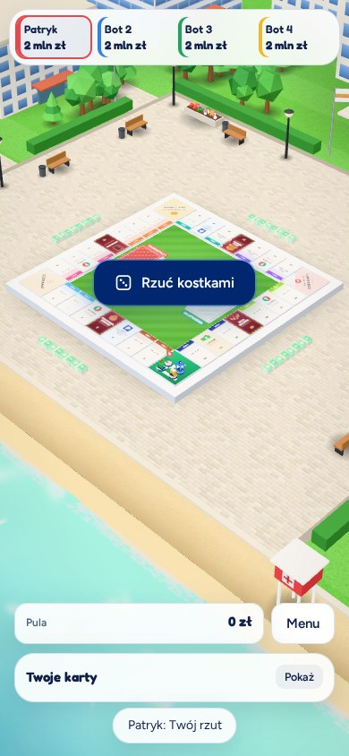

Praca inżynierska · WSiZ w Bielsku-Białej
WSiZ TourUczelnia w formie gry planszowej
Gra 3D w przeglądarce w stylu Business Tour. Rzucasz kostkami, odpowiadasz na pytania z przedmiotów, kupujesz sale i budujesz od telefonu do serwerowni. Plansza leży na kampusie nad wodą.


Plansza w trakcie gry00 · Zwiastun
Cała gra w 42 sekundy
Film powstał ze zrzutów naszej gry i jest cięty w rytm muzyki. Muzyka: „Epic Cinematic Trailer | ELITE”, Alex-Productions (onsound.eu), licencja CC BY 3.0.
01 · Świat
Uniwersytet z jednej strony, wakacje z drugiej
Plansza leży na placu z kostki granitowej, jak makieta w przekroju: z boku widać warstwy ziemi i przezroczystą wodę. Za planszą gmach z wieżą zegarową, wydziały, boisko i parking. Przed nią plaża, pomost i latarnia na falochronie.


- FaleWoda to suma fal Gerstnera. Łodzie, skuter i boje unoszą się i przechylają na tej samej fali, którą widać na wodzie.
- PlacKostka ma mapę normalnych, więc fugi i fazowane brzegi łapią światło. Pod ławkami i latarniami leżą miękkie cienie.
- KadrPrzed planszą nic wysokiego nie stoi, więc w grze nic nie zasłania pól.
02 · Wygląd
Dwa wyglądy, jedna plansza
W Ustawieniach wybierasz otoczenie. Wybór się zapamiętuje, a prezentacja zawsze pokazuje makietę.

03 · Tura
Jedna tura, pięć decyzji
Zasady jak w Business Tour, tylko zamiast szczęścia liczy się wiedza ze studiów.

Rzut
Rzucasz dwiema kostkami 3D. Dublet daje drugi rzut, trzeci dublet z rzędu kończy się w dziekanacie.
Pytanie
Żeby kupić salę, odpowiadasz na pytanie z przedmiotu. Masz 60 sekund. Pytania wpisują wykładowcy.
Zakup albo czynsz
Wolna sala jest do kupienia, cudza kosztuje czynsz. Paczki banknotów lecą przez plac z jednego stosu na drugi.
Budowa
Cała grupa w jednym kolorze to monopol. Na swoich salach stawiasz budynki, a czynsz rośnie z każdym poziomem.
Szansa
Dobra odpowiedź daje kartę ułatwienia, zła kartę utrudnienia: atak na salę przeciwnika, tarcza albo stracona kolejka.
04 · Pionki
Cztery pionki, każdy z charakterem
Stoją na podeście w kolorach uczelni: lakierowany granat, pas w kolorze gracza i jasna płytka ze srebrnym rantem.




05 · Budynki
Od telefonu do serwerowni
Jest pięć poziomów, a każdy ma kolor właściciela sali. Wszystkie modele są zbudowane kodem z prostych brył.
- 01Telefon
- 02Laptop
- 03Komputer
- 04Szafa rack
- 05Serwerownia


06 · Karty
23 akty własności, każdy z własną ilustracją
Każdy akt ma nagłówek w kolorze grupy, cenę, tabelę czynszów i koszt budowy. Karty pytań są gotowe do druku w formacie 63 × 88 mm.
Tył kart ma kolory pola Szansa: ułatwienia są zielone, a utrudnienia czerwone.
07 · Urządzenia
Graj, gdzie chcesz i kiedy chcesz.
Gra działa w przeglądarce, bez instalacji. Na komputerze panele stoją w rogach, na tablecie pod planszą, a na telefonie gracze mieszczą się w jednym rzędzie. Plansza jest zawsze cała na ekranie.



- Bez instalacjiLink otwiera grę od razu, także na telefonie.
- Stała kameraPlanszę można tylko obracać, nic nie ucieka z kadru.
- Sama dba o płynnośćNa słabszym sprzęcie zmniejsza rozdzielczość i cienie.
08 · Kod
Wszystko zrobione w kodzie, od pierwszej kostki brukowej
- Silnik
- Silnik to Three.js 0.169. Cała gra mieści się w jednym pliku
index.html, bez bundlera. - Grafika
- Każdy model, tekstura i ilustracja jest narysowana kodem. Bez gotowych modeli i bez generatorów obrazów.
- Muzyka
- Muzyka z kodu powstaje w Web Audio. W prezentacji i filmie gra też utwór Alex-Productions na licencji CC BY 3.0.
- Pytania
- Wykładowcy wpisują je w Excelu. Skrypt sprawdza arkusz i zapisuje
baza-pytan.jsdla gry. - Logowanie
- Logowanie przez wirtualny dziekanat jest w przygotowaniu. Klucz aplikacji jest tylko w pliku
.envna serwerze, nigdy w przeglądarce. Gra nie widzi haseł studentów. - Płynność
- Gra sama zmniejsza rozdzielczość, gdy komputer nie nadąża, i lżej liczy cienie na telefonach.
Rzuć kostkami.
Gra działa w przeglądarce i nie wymaga instalacji. Zagrasz solo z botami na trzech poziomach albo w drużynach 2 na 2.
Zagraj w WSiZ Tour